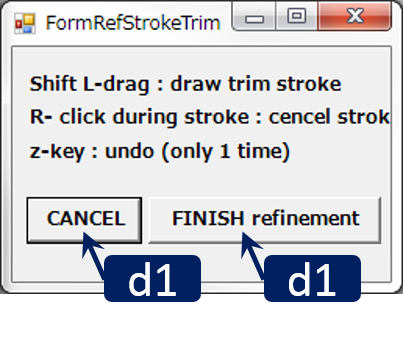

Refinement Stroke Triming

RoiPainter I/O Visualization Segmentation Download code (github)
Refinement Stroke Triming
"Refinement Stroke Triming"は，他のツールにて抽出したROI(関心領域)の不要部分を切り取る（トリミング）できるツールです．3次元表示されたROIに対し，その不要部分を囲むようなストロークを描くと，その部分を削除できます．他の半自動領域分割ツール（Graph Cutや領域拡張）である程度正確にできたものの一部修正したいようなときに便利です．ROIから切り取った領域は新たなROIとして登録されるため，あるROIを2分割する目的にも利用できます．
Workflow
- ツールの起動 :
--- "Menu > ModeSwitch > Refinement Stroke Triming" をクリック.
--- 領域選択ダイアログが表示されるので，修正したい領域を指定 - Shift + 左ドラッグによりトリミングストロークを描き不要部分を除去する．（ストロークは何度でも描ける）
- ダイアログ右下のFinish And Storeをクリックし，トリミング結果を登録する．編集対象領域からトリミングされた領域は，新しい領域としてMask IDが割り振られる．
Main Windowの操作方法
- マウス L/M/R ドラッグ : 視点の平行移動/ズーム/回転
- マウス ホイール : 切断面の前後移動
- Ctrl + L ドラッグ : 曲面切断面の生成
- Ctrl + L クリック : 曲面切断面の削除
- Shift + L ドラッグでトリミングストロークの描画
- トリミングストローク描画中に右クリックでストロークをキャンセル
- Ctrl + z keyでundo （一ステップ分だけ）
Dialogの操作方法
 d1. Cancel : 現在の修正結果を破棄し，Visualization Standardモードへ移るd2. Finish Refinement : 現在の修正結果を登録する．